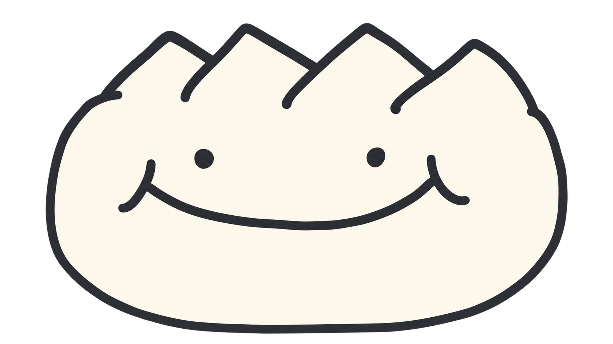

自分のしゅくだいノート
未接続：保存した記録を確認しています。
接続していない間は、最後に受信した記録です。先生の未受信の変更は表示できません。
先生のiPadにつなぐ
同じWi-Fiで先生の画面も開いてください。先生が自分の出席番号を選んで作った接続コードだけを使います。コードをWeb検索やアドレス欄に貼り付けないでください。アプリを閉じた後は、もう一度コード交換が必要です。
先生に画面を見せ、確認番号を比べてもらってください。先生が接続を許可すると、自分の記録だけを受け取れます。
学校のWi-Fiが端末同士の通信を禁止している場合は接続できません。
きみの「できた！」が、ふえていく。
しゅくだいノート
✦✦まいにちの一歩を、いっしょに！
この日のしゅくだい
累計は、これまでに保存した提出不要の日を除く全日付の提出回数です。
「未確認」は、先生がまだ提出済みとして記録していない状態です。
がんばりが、たからものになる。
トロフィーコレクション
グレーの影は、これからゲットできるトロフィー。条件を達成すると金色になるよ！
連続回数は、記録を保存した提出日を順に数えます。先生が全員または自分を提出不要に設定した日、全員・全教科が「未確認」の日、記録のない日は飛ばし、連続は途切れません。それ以外の日に自分の教科が「未確認」だと、その教科の連続が途切れます。連続トロフィーは最長連続回数で判定するため、一度達成すれば、その後途切れても残ります。記録を訂正した場合は再計算します。